忠武路（Chungmuro） / 2009


 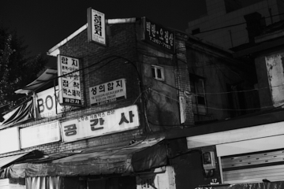
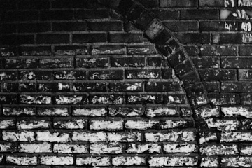
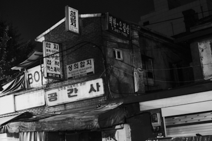
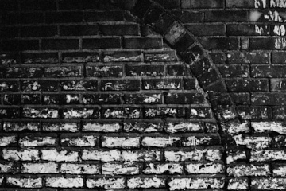
 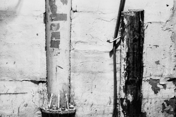
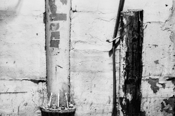


 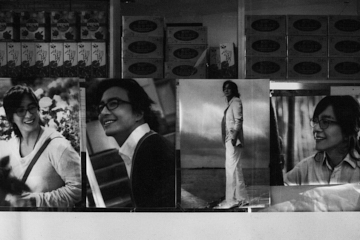
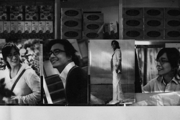


 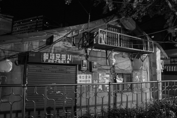
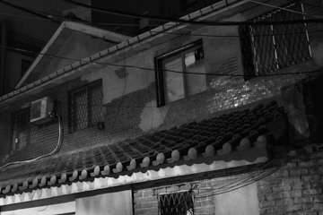
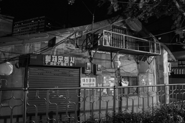
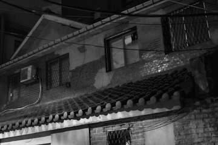


 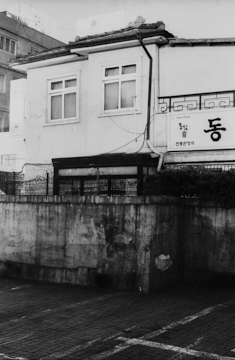
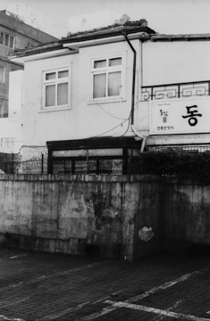

忠武路の旧名は「稚谷（ジンゴゲ）」で、交通と軍事の要衝だった。しばらくのあいだ、地名改称の時期を誤って記憶していた。解放後のことだと当然のように思っていたが、実は日本による行政改編の一部だった。日本の軍国主義を美化する意図で、李舜臣将軍の諡号「忠武」を利用したのだ。皮肉なことに、ここは日本人の居住と商業の中心地でもあった。
敗戦後、彼らは家を残して去り、それらは「敵産家屋」と呼ばれた。しばらくは「持ち主のいない家」であり、のちに国家から民間へ譲渡された。この過程では雑音も多かったという。親日派が財産増殖に利用したからだ。違法・合法の区別なく、根深いごまかしと厚かましさで経済権力を維持し、世襲した。
代を重ねるうちに過去は薄れ、建物は改修・改築を経て姿を変え、自然に日常へと定着した。ふと日本風のよそよそしい建物が目に入るときや、わずかに残った旧い柱を見るとき、それらは痛ましい過去の痕跡というより、漠然とした近代の趣として残る。
彼らは決してこの場所から去ってはいない。完全に共存している。明洞の夜道で、ペ・ヨンジュンの微笑みが私に向けられていないことは明らかだ。だからこそ、親しみやすさだけではない何かが残る。
参考
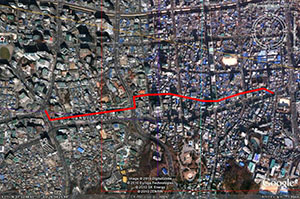- なし
参加展
- 2018 『ホタル（Firefly）』